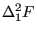
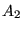
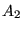

Next: Pipe, Entrance Up: Fluid Section Types: Liquids Previous: Pipe, Sudden Enlargement Contents
A sudden contraction (Figure 116) is characterized by head losses  of the form:
 |
(155) |
where  is a head loss coefficient depending on the ratio ,
is a head loss coefficient depending on the ratio ,
 is the mass flow, g is the gravity acceleration and
is the mass flow, g is the gravity acceleration and  is the
liquid density.
is the
liquid density.  and  are the larger and smaller cross section,
respectively. Notice that this formula is only valid for
and  are the larger and smaller cross section,
respectively. Notice that this formula is only valid for
 . For
a reverse mass flow, the formulas for a pipe enlargement have to be taken. Values for
. For
a reverse mass flow, the formulas for a pipe enlargement have to be taken. Values for  can be found in file “liquidpipe.f”.
can be found in file “liquidpipe.f”.
The following constants have to be specified on the line beneath the *FLUID SECTION, TYPE=PIPE CONTRACTION card:
The gravity acceleration must be specified by a gravity type
*DLOAD card defined for the elements at stake. The material
characteristic  can be defined by a
*DENSITY
card.
can be defined by a
*DENSITY
card.
Example files: centheat1, pipe.